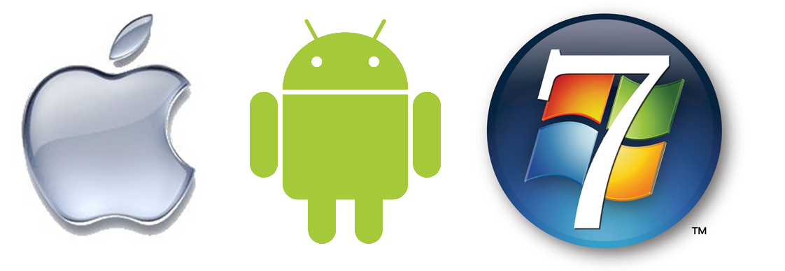

Principales sistemas operativos

Es importante conocer de antemano los principales sistemas operativos que existen en el mundo, entre ellos varian las capacidades y ventajas, pero tengamos siempre en cuenta que tenemos que estar preparados para poder manejar cualquiera.
Los sistemas operativos varían dependiendo del dispositivo, su objetivo y capacidad. No lo olviden.
Microsoft Windows
Es sin duda el sistema operativo más usado en el mercado actual, contiene una base enorme de controladores (sofware que es capaz de controlar el harware con la ayuda del sistema operativo) lo que lo hace compatible con una innumerable cantidad de equipos de cómputo.
Es necesario recordar que Windows se encuentra actualmente en la versión llamada Windows 10, la cual funciona por medio de actualizaciones y por lo que ahora funciona más como un servicio en lugar de un producto como sus anteriores versiones.
Listado de versiones de Windows
Windows 10
Windows 8.1
Windows 7
Windows Vista
Windows XP
Windows 2000
Windows 98
Windows ME
Windows Embebbded
Windows 10 IoT
Mac OS - iOS
Iniciaremos hablando un poco de iOS, el cual es el sistema operativo de la empresa Apple que va enfocado a los sistemas móviles de su marca, tales conocidos como iPhone.
Este sistema se encarga de controlar todas las funciones del dispositivo, tales como la administración de la batería, entre otros.
Pasando a Mac OS, es el sistema operativo que controla los equipos de escritorio y portátiles que desarrollo la misma empresa para solo sus equipos. Algunas de las versiones:
Mac OS X 10.0 (Cheetah)
Mac OS X 10.1 (Puma)
Mac OS X 10.2 (Jaguar)
Mac OS X 10.3 (Panther)
Mac OS X 10.4 (Tiger)
Mac OS X 10.5 (Leopard)
Mac OS X 10.6 (Snow Leopard)
Mac OS X 10.7 (Lion)
Su software no es de código abierto, lo que supone que solo Apple puede realizar modificaciones, cambios y demás.
Android
Quizá uno de los más conocidos en el mundo de los dipositivos móviles. Es un sistema operativo basado en instrucciones ARM, las cuales hacen del sistema más ligero en comparación con los de arquitectura x64-x86.
El sistema operativo gestiona todas las capacidades del dispositivo, incluyendo un chipset capaz de manejar señarles 4G. Con esto se asegura la mejor conectividad posible.
Actualmente este sistema se encuentra en la versión llamada "Pie" o 9.0.